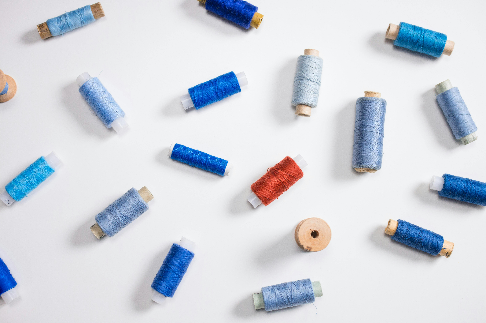
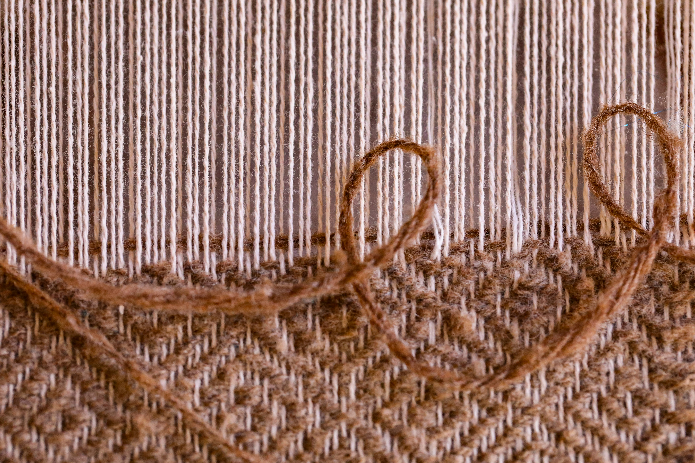

Entre hilos y recuerdos
"El hilo es la línea más corta entre la intención del corazón y la creación de las manos."
A veces me detengo frente a la estantería donde guardo los carretes y simplemente observo. No veo solo colores; veo posibilidades. Cada cilindro de madera envuelto en algodón o lino es el principio de una conversación que aún no ha sucedido. La sensación de crear algo desde cero con tus propias manos es indescriptible.
-
La selección del núcleo
Elige un hilo de urdimbre que sea resistente. No busques solo belleza, busca estructura; es la columna vertebral de tu obra.
-
El ritmo del devanado
Al pasar el hilo del carrete a la lanzadera, mantén una tensión constante. Un hilo demasiado tenso se rompe, uno demasiado flojo crea nudos que ensucian la textura.
-
La escucha atenta
Una vez empieces a tejer, escucha el sonido de la madera contra la fibra. Si el ritmo es constante, la trama será perfecta.
"En cada puntada hay un silencio que dice más que mil palabras terminadas."
Cuando selecciono la paleta para un nuevo tapiz, el primer paso es siempre sensorial. Tocar la rugosidad del lino, sentir la suavidad de la lana merino... es ahí donde el diseño empieza a cobrar vida. La imagen de cientos de carretes alineados es mi mayor fuente de inspiración: un recordatorio de que, aunque el hilo parezca frágil por sí solo, bajo la tensión adecuada y el ritmo del telar, se convierte en algo eterno.

Mucha gente se sorprende de que tarde semanas en terminar una sola pieza pequeña. Pero la artesanía me ha enseñado que el tiempo es un material más, tan importante como el algodón mismo. No se puede apresurar el secado de un tinte natural ni la caída de una tela recién sacada del bastidor. En ese tiempo de espera es donde realmente nos encontramos a nosotros mismos.
Cada vez que entrego una pieza, siento que entrego un pedacito de mis tardes de domingo, de mis tazas de café frío y de mis pensamientos más profundos. Al final del día, todos somos hilos en un gran tapiz colectivo, tratando de encontrar el lugar exacto donde nuestra textura encaje y aporte fuerza al conjunto.